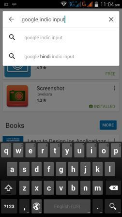
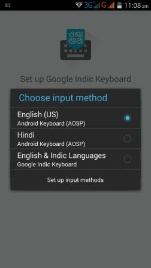

If you want to type in your language with English read this article and follow the steps to Enable your language typing threw English. This app is free and provided by Google. this app will help you type in Indian languages like Hindi, Marathi, Punjabi, Kannada or all other Indian language by transliteration method.
In android phone we can easily type in Hindi, Marathi, Punjabi, Gujarati, Tamil, Telugu, Malayalam, Bengali, Odia, Kannada and Assamese (Total 11 Indian language supported by this software) with simply download one app from google play store and enable simple setting for Hindi (or your language) type in android phone. This is very simple method of type in Hindi(as well as 10 other Indian languages also) in Android phone, this app will convert English in Hindi (or your language). Keep in mind English to Hindi typing is known as "Hinglish". Follow given steps to enable Hindi typing (or your language) in android phone:
Step 1: Download Google Indic Keyboard App from play store
Click on link to download Google indic keyboard
You can direct download app to your mobile phone by searching "Google Indic keyoard" in Play store.

Step 2: After installation open the app by clicking on Open button.
Step 3: When you first time open the app will see three setting menus as showing in below image:
Step 4: Now select "English & Indic Languages" and click on "Set up Input Method". A new Pop up box will open having options of many languages you have to select "Hindi & Hinglish" (or your language) as shown in image below:

Step 5: After that you will small aero icon in bottom of your mobile phone screen. Click on to select the theme from available two.
Step: 6 Now Cilck on Given button shown in image to type in English to Hindi or Hinglish. You can change the keyboard by press and hold spacebar key it will open keyboard option, you can change back to English or Hinglish.
Step 7 If you want to change setting again and go to -> settings -> languages & input -> you will see options there to change or set another language and input method.